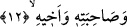

ister ki, o günün azâbından (kurtuluş için), oğullarını,
“Birbirlerine gösterilirler”. Bu bir cümle-i isti’nâfiyedir, yâni yeni bir cümle
başlangıcıdır. Burada sanki şöyle denmiştir: “Akrabaların birbirlerinin hâlini
sormaması ve birbirleriyle konuşmaması tabiîdir. Belki birbirlerini göremeyecekleri
için soramayacaklardır. Birbirlerini göremeyeceklerine göre hâllerini nasıl sorsunlar?”
İşte bu âyet-i kerîmeyle kafalarda oluşabilecek böylesi bir soruya cevap verilmiş oluyor
ve deniyor ki: “Onlar birbirlerine gösterilirler”. Bu fiilde birinci zamir, “yakın
akraba” kelimesinden birinciye, ikinci zamir de ikinciye gitmektedir. Her iki zamirin de
çoğul getirilmesi, “yakın akraba” kelimesinin umûmî olmasından dolayıdır. Yâni bütün
akraba ve yakınlar buna dâhildir, sâdece iki akraba değil!
Tâcu’l-masâdır’da şöyle denir: “«Yubassarunahum/birbirlerine gösterilirler»
fiilinin kökü olan “tebsîr”, görmek, müşâhede etmek, tanıtmak ve açıklama yapmak
mânâlarına gelir. Bu fiil, ikinci mef’ulünü “bâ” harf-i cerri ile alır, bu harf-i cerr bazen
hazfedilebilir. Bizim üzerinde durduğumuz âyet-i kerîmede işte “ba” harf-i cerri
böylesine hazfedilmiştir.” Yâni “yubassarunahum” fiili ikinci mef’ûle tad’îf ile geçişli
olmuştur. Birinci mef’ûl ise fâil yerine getirilmiştir. Arapça’da yaygın ve bilinen husus,
bu fiilin ikinci mef’ûlünü harf-i cerr yardımı ile almasıdır. Ancak bu harf-i cerr bazen
hazfedilebilir. Meselâ fiil, mef’ûlün bih’e nisbet edildiğinde harf-i cerr hazfedilir.
Burada da durum bu kabildendir. Bu durumda mânâ şöyle olur: Akrabalar akrabalarına
gösterilirler, yâni onlar kendi akrabalarını görürler, birbirlerine gizli kalmazlar.
Hallerini ve hatırlarını sormalarına tek mânî, herkesin kendi canının derdine düşmüş
olmasıdır. Kıyâmet günü hiçbir mahlûk yoktur ki arkadaşı ve yakınının gözü önünde
olmasın! Kişi; babasını, kardeşini, akrabalarını ve aşîretini görür fakat onlara hâllerini
ve hatırlarını sormaz ve kendileriyle konuşmaz. Çünkü kendisi kendi canının derdine
düşmüş ve kendisiyle meşgul olmaktadır.
İbn Abbas (r.a.) der ki: Bir an birbirlerini tanırlar, sonra artık tanımaz olurlar.
“Günahkâr” yâni kâfir; bâzı âlimlere göre günahkâr herkes, “o günün azâbından
kurtulmak için” başlarına gelen azaptan kurtulmak için. Bir başka ifâdeyle zikredilen o
günde başlarına gelen azaptan kurtulmak için... Âyette o gün anlamına gelen “yevmeiz”
terkibi aslında “yevmiiz” şeklindedir. Çünkü “azâb” kelimesi kendisine izâfe
edilmektedir. Böyle okunması kelimenin gayr-ı mütemekkin izâfesinden dolayıdır.
“Oğullarını” bu kelimenin aslı “beniyne” şeklindedir ancak sonundaki “nun” harfi,
kelime izâfete girdiğinden dolayı düşmüştür. Bu kelimenin çoğul olarak getirilmesi,
insanların oğullarının çok olmasını istemelerinden ve buna rağbet etmelerinden
dolayıdır.